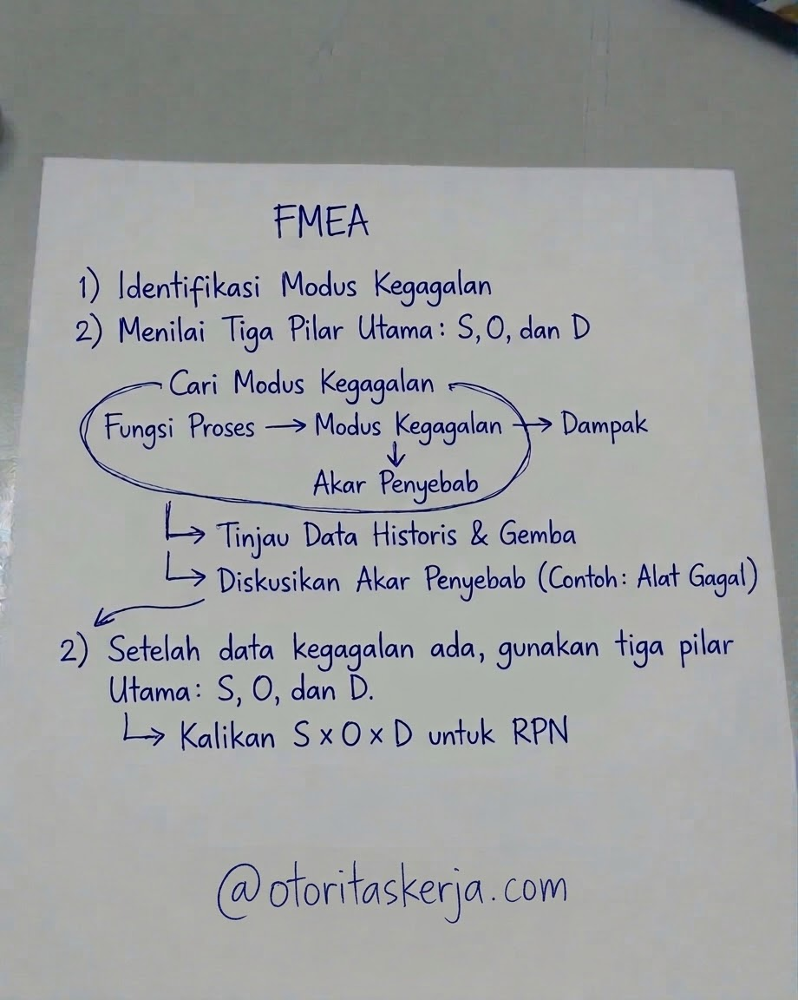

Mengapa FMEA Penting di Lini Produksi?
Di dunia manufaktur—khususnya pada proses produksi hulu maupun hilir—kehilangan waktu produksi (downtime) dan tingginya produk cacat (Not Good / NG) adalah musuh utama efisiensi. Seringkali, tim produksi bertindak sebagai pemadam kebakaran: menunggu mesin rusak atau produk *reject* menumpuk, baru kemudian mencari solusi. Padahal, pendekatan reaktif ini membuang banyak biaya material dan tenaga kerja.
Failure Mode and Effects Analysis (FMEA) hadir sebagai alat pencegahan proaktif. Melalui metode ini, kita memetakan potensi kegagalan sebelum benar-benar terjadi di lantai produksi, mengevaluasi seberapa parah dampaknya, dan menutup celah risikonya sejak dini.
Memetakan Potensi Mode Kegagalan (Failure Modes)
Langkah awal penyusunan FMEA adalah mengurai setiap tahapan proses kerja secara rinci. Sebagai ilustrasi, tahapan umum dalam proses produksi meliputi penyiapan material atau bahan baku (*incoming preparation*), proses utama mesin (*machining/processing*), perakitan atau *finishing*, hingga pengemasan akhir.

Di setiap tahapan tersebut, tanyakan: “Bagaimana proses ini bisa gagal?”. Contoh kegagalan umum di berbagai lini manufaktur meliputi:
- Penyimpangan Dimensi atau Spesifikasi: Toleransi ukuran produk tidak sesuai dengan standar mesin atau gambar teknik yang ditetapkan.
- Kegagalan Ikatan atau Sambungan: Lem, las, segel, atau penguncian komponen kurang kuat sehingga mudah lepas atau bocor.
- Cacat Tampilan atau Permukaan: Adanya goresan, noda, atau ketidaksesuaian hasil cetak/finishing pada produk jadi.
Menilai Tiga Pilar Utama: S, O, dan D
Setelah potensi kegagalan teridentifikasi, evaluasi dilakukan menggunakan tiga parameter penilaian berskala 1 sampai 10:
Seberapa parah dampak kegagalan tersebut bagi pelanggan atau proses selanjutnya?
Seberapa sering penyebab kegagalan tersebut berpotensi muncul dalam operasional?
Seberapa besar kemungkinan sistem kontrol kita mendeteksi kegagalan sebelum produk keluar pabrik?
Hasil perkalian dari ketiga nilai ini menghasilkan angka RPN (Risk Priority Number) dengan rumus:
Semakin tinggi angka RPN (skala 1–1000), semakin mendesak masalah tersebut untuk segera diselesaikan melalui tindakan korektif atau perbaikan sistem.
Matriks Kriteria Skor Nilai SOD (Skala 1 - 10)
Untuk menghindari penilaian yang bersifat subjektif saat melakukan analisis bersama tim, gunakan standar acuan tabel penilaian SOD berikut:
1. Tabel Penilaian Severity (S) — Tingkat Keparahan
| Skor | Kategori | Kriteria Dampak Operasional / Pelanggan |
|---|---|---|
| 10 | Bahaya (Tanpa Peringatan) | Mengancam keselamatan jiwa operator/pengguna atau melanggar regulasi tanpa ada indikasi awal. |
| 9 | Bahaya (Dengan Peringatan) | Sangat berbahaya terhadap keselamatan kerja/hukum, namun masih ada tanda peringatan sebelum terjadi. |
| 8 | Sangat Tinggi | Produk rusak total, tidak berfungsi, atau menyebabkan stoppage lini produksi dalam waktu lama. |
| 7 | Tinggi | Produk dapat berfungsi tetapi kinerja utama turun drastis. Pelanggan dipastikan mengajukan komplain resmi. |
| 6 | Sedang-Tinggi | Fungsi utama mengalami kendala, memerlukan pengerjaan ulang (rework) di lini produksi. |
| 5 | Sedang | Fungsi sekunder terganggu. Pelanggan merasakan adanya penurunan kualitas atau ketidaknyamanan. |
| 4 | Sedang-Rendah | Produk dapat berfungsi normal, namun terdapat cacat penampilan (visual defect) yang disadari mayoritas pelanggan. |
| 3 | Rendah | Cacat estetika ringan yang hanya disadari oleh sebagian kecil pelanggan yang sangat teliti. |
| 2 | Sangat Rendah | Dampak sangat kecil pada penampilan fisik. Tidak mengganggu fungsi produk sama sekali. |
| 1 | Tidak Ada Dampak | Kegagalan tidak memberikan efek apapun pada operasional, kualitas, maupun pelanggan. |
2. Tabel Penilaian Occurrence (O) — Kemungkinan Terjadi
| Skor | Kemungkinan | Estimasi Frekuensi / Rasio Kegagalan |
|---|---|---|
| 10 | Sangat Tinggi (Pasti) | Hampir pasti terjadi secara konsisten (> 100 per 1.000 unit / > 10%). |
| 9 | Sangat Tinggi | Terjadi berulang kali dalam proses harian (sekitar 50 per 1.000 unit / 5%). |
| 8 | Tinggi | Sering terjadi dalam siklus produksi (sekitar 20 per 1.000 unit / 2%). |
| 7 | Cukup Tinggi | Terjadi berulang secara berkala (sekitar 10 per 1.000 unit / 1%). |
| 6 | Sedang-Tinggi | Terjadi sesekali saat variasi bahan baku/mesin muncul (sekitar 5 per 1.000 unit). |
| 5 | Sedang | Terjadi sesekali dalam satu lot produksi (sekitar 2 per 1.000 unit). |
| 4 | Sedang-Rendah | Jarang terjadi, ada prosedur isolasi awal (sekitar 1 per 1.000 unit). |
| 3 | Rendah | Sangat jarang terjadi dalam kondisi operasional normal (sekitar 0.1 per 1.000 unit). |
| 2 | Sangat Rendah | Hampir tidak pernah terjadi karena kontrol ketat (sekitar 0.01 per 1.000 unit). |
| 1 | Mustahil Terjadi | Pencegahan fisik/desain memastikan kegagalan tidak dapat muncul (< 0.001 per 1.000 unit). |
3. Tabel Penilaian Detection (D) — Kemampuan Deteksi
| Skor | Peluang Deteksi | Kriteria Sistem Kontrol & Inspeksi |
|---|---|---|
| 10 | Mustahil Terdeteksi | Tidak ada kontrol inspeksi atau metode pengujian yang mampu mendeteksi cacat ini. |
| 9 | Sangat Buruk | Kontrol hanya mengandalkan pengecekan tidak teratur atau bersifat acak tanpa standar baku. |
| 8 | Buruk | Inspeksi visual manual 100% oleh operator, namun rawan terlewat karena faktor kelelahan (fatigue). |
| 7 | Rendah | Terdeteksi melalui pengujian sampel acak (sampling inspection) secara manual. |
| 6 | Cukup Rendah | Pemeriksaan dilakukan dengan pengukuran alat ukur manual pada sampel produk. |
| 5 | Sedang | Terdeteksi oleh pemeriksaan statistik (Statistical Process Control / SPC) di tengah proses. |
| 4 | Sedang-Tinggi | Terdeteksi otomatis di akhir proses (post-process automated checking) dengan alarm penanda. |
| 3 | Tinggi | Terdeteksi otomatis di stasiun kerja (in-station control) yang langsung stop mesin jika terjadi penyimpangan. |
| 2 | Sangat Tinggi | Pencegahan kesalahan berbasis sensor otomatis yang menolak produk cacat secara fisik. |
| 1 | Pasti Terdeteksi | Sistem Poka-Yoke (mistake-proofing) fisik di mana produk cacat secara mekanis tidak mungkin diproses. |
Prinsip Utama FMEA:
Fokuskan tenaga perbaikan pada titik yang memiliki angka RPN tertinggi. Jangan mencoba memperbaiki segalanya sekaligus; selesaikan akar masalah yang paling berisiko menghentikan lini produksi.
Contoh Penerapan FMEA pada Proses Perakitan Komponen Mekanikal
Sebagai ilustrasi netral di dunia manufaktur perakitan (assembly), mari kita lihat contoh analisis mode kegagalan pada proses pemasangan komponen braket mekanik:
| Tahap Proses | Modus Kegagalan | Akar Penyebab Potensial | S | O | D | RPN | Rencana Tindakan Korektif |
|---|---|---|---|---|---|---|---|
| Assembly / Pengencangan Baut | Baut pengikat longgar (loose screw). | Operator menggunakan standar torsi manual yang tidak konsisten / kunci momen belum dikalibrasi. | 8 | 5 | 6 | 240 | Mengganti dengan electric torque screwdriver otomatis dan membuat jadwal kalibrasi alat ukur berkala. |
| Inspeksi Akhir (Final Check) | Dimensi lubang braket meleset dari spesifikasi gambar teknik. | Keausan mata bor (drill bit) pada mesin drilling tidak terpantau oleh operator. | 7 | 6 | 7 | 294 | Menetapkan standar preventive replacement mata bor berdasarkan jumlah stroke atau jam pakai mesin. |
*Contoh di atas bersifat universal dan lazim digunakan sebagai modul pelatihan teknik industri standar di berbagai literatur manajemen mutu global.
Implementasi di Lantai Produksi
Penerapan FMEA bukan sekadar dokumen formalitas untuk audit mutu, melainkan panduan hidup harian bagi seorang supervisor dan leader produksi. Ketika lembar kerja FMEA diintegrasikan dengan rutinitas pengecekan mesin, operator lini depan akan memiliki kepekaan tinggi terhadap perubahan parameter sekecil apapun.